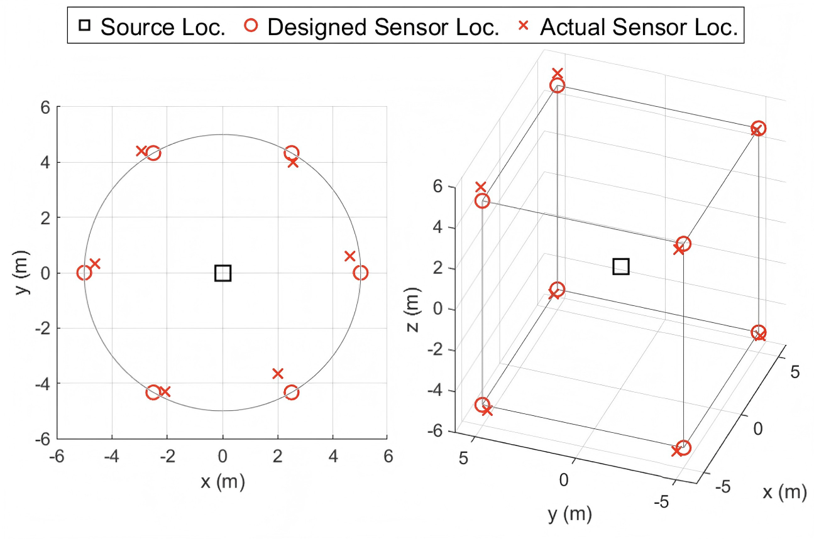
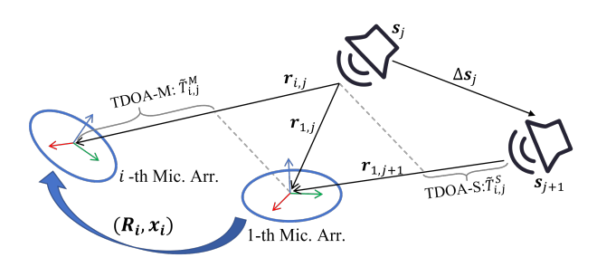
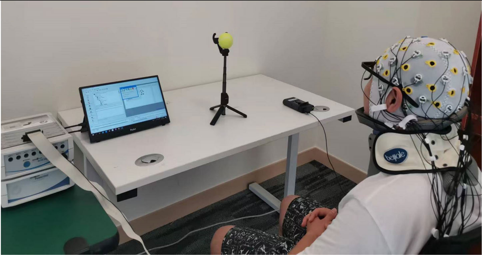
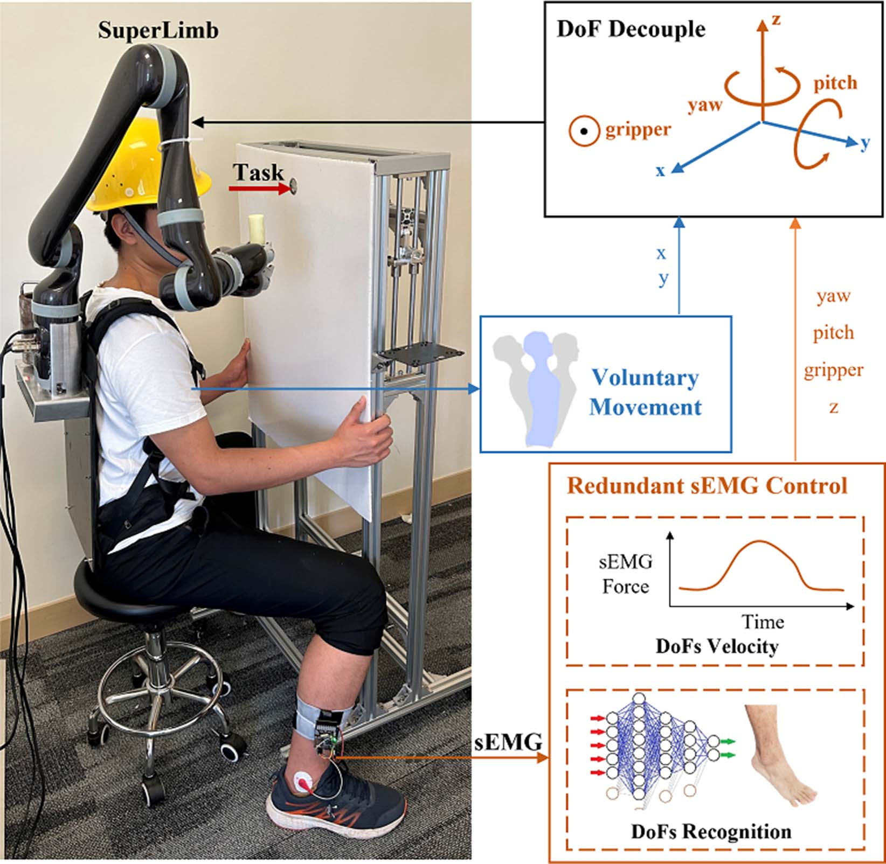

About Me
SUSTech M.S. '26 | Advised by Hong Zhang. Previously, advised by Chenglong Fu, He Kong. Focus on imitation learning for robotic manipulation. Aim to boost productivity through simple & practical solutions to real-world constraints, rather than being a 'paper printer'.
Previous robotics research experience:
- Human–Robot Interaction (HRI): Mixed Reality (MR)–assisted grasping, Brain–Computer Interfaces (BCI), and EMG control.
- Nonlinear Parameter Estimation: Spatio-temporal calibration for wireless sensors and optimal sensor placement.
- Robotic Navigation: Visual Teach-and-Repeat (VT&R).
Projects
Few-Shot Robot Manipulation via Flow Matching
Individual Project
Feb. 2026 – Present
- Cup Hanging: Apply Improved DAgger and Flow Matching to achieve spatial generalization with only 71 demonstrations (98% success rate).
- T-Shirt Lifting: Achieve a 90% success rate in lifting T-shirt top layer using Flow Matching with just 30 demonstrations.
Visual Teach-and-Repeat Navigation System
Feb. 2024 – Jun. 2024
Human teleoperates the robot to build a local map and trajectory; the robot then autonomously navigates by following the trajectory.
Publications
Optimal Sensor Placement for Full-Set TDOA Localization Accounting for Sensor Location Errors
C. Zhang, X. Han, H. Kong, K. C. Ho
IEEE Transactions on Aerospace and Electronic Systems (TAES), 2025
- Prove that the theoretical bounds of wireless localization accuracy with and without sensor position errors are linearly related, and their optimal placement solutions are equivalent.
- 6-page paper, 4 simulations, concise and elegant conclusion.

Calibration of Multiple Asynchronous Microphone Arrays using Hybrid TDOA
C. Zhang, W. Pan, X. Han, H. Kong
IEEE International Conference on Acoustics, Speech and Signal Processing (ICASSP), 2025
Extend Hybrid-TDOA to multi-array calibration by introducing a two-stage method.

Asynchronous Microphone Array Calibration using Hybrid TDOA Information
C. Zhang, J. Wang, H. Kong
International Conference on Intelligent Robots and Systems (IROS), 2024
Proposed Hybrid-TDOA integrates conventional TDOA with TDOA-S, a novel measurement to reduce parameter redundancy and enhance estimation accuracy.
An effective head-based HRI for 6D robotic grasping using mixed reality
C. Zhang, C. Lin, Y. Leng, Z. Fu, Y. Cheng, C. Fu
IEEE Robotics and Automation Letters, 2023
A novel integration of head movements and Mixed Reality (MR) to assist users with motor impairments in grasping everyday objects, including transparent and reflective items.
Neural correlation of EEG and eye movement in natural grasping intention estimation
C. Lin, C. Zhang, J. Xu, R. Liu, Y. Leng, C. Fu
IEEE Transactions on Neural Systems and Rehabilitation Engineering, 2023
EEG and eye movements are consistent in natural grasp intent.

Voluntary-redundant hybrid control of SuperLimb based on redundant muscle for on-site assembly tasks
C. Lin, C. Zhang, X. Yan, Y. Leng, C. Fu
IEEE Robotics and Automation Letters, 2023
A human-robot collaboration system based on a wearable robotic arm, utilizing redundant leg EMG signals for control.
